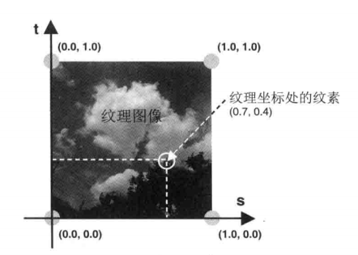
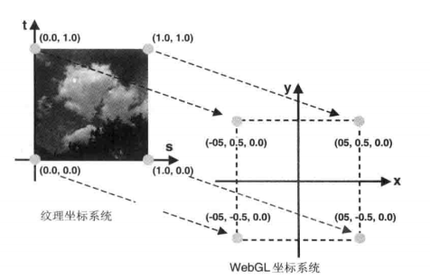
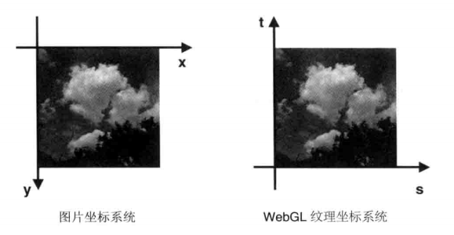
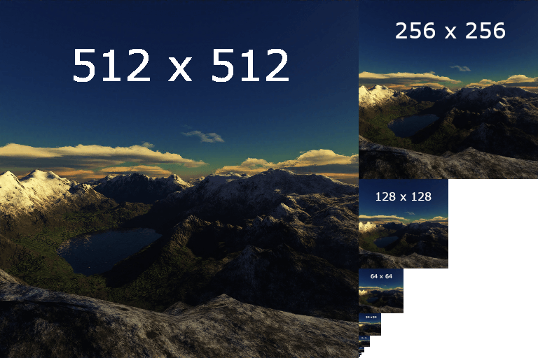
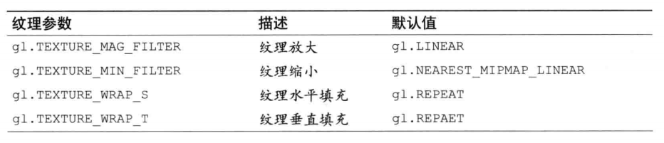
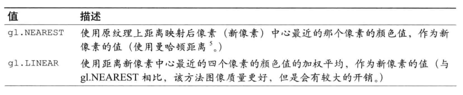
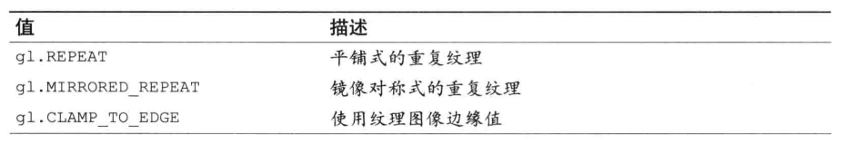

添加纹理
该示例演示了如何为两个三角形组合成的正方形添加纹理
纹理可以理解为片元着色器对图像进行上色时的参考，纹理可以是一张图片，一个视频。比如基于一张图片当做纹理进行采样，把采样结果绘制到指定的片元上，那么最后就会把这张图片绘制到对应的三角形上。
纹理也不仅仅只能用在片元着色器上，如果使用纹理对顶点进行偏移也是可行的，类似的效果比如 svg 中的移位映射，结合噪声图可以改变原始图像坐标的位置，实现扭曲的波浪效果。
纹理坐标
纹理本身也有坐标，通过把纹理坐标和 webgl 中的坐标进行对应，即可标记出纹理在 webgl 中渲染的位置和大小。纹理坐标使用 st 坐标系，s 为水平轴方向朝右，t 为垂直轴方向朝上。st 坐标系的垂直轴正好和 webgl 坐标系的 Y 轴方向相反，所以一般情况下载 webgl 中加载纹理都需要让纹理沿水平方向翻转 180°，以保证坐标正常对齐。比如示例中的图片，它的纹理坐标如下：
图片取自《WEBGL 编程指南》
纹理坐标中的一个点称作纹素，类似像素。 纹理坐标和图片的尺寸无关，$(0,0)$ 总是左下角，$(1,1)$ 总是右上角。所以采用的纹理即便是长方形，也可以使用 0 ~ 1 的数字表示纹理的所有纹素。
有了纹理坐标，webgl 还需要知道绘制时各个顶点对应纹理坐标的哪个位置，这有一个一一对应的关系，示例中的对应如下：
这里编写了一个正方形四个顶点的坐标，这个正方形基于原点居中，每个顶点都额外携带了一个纹理坐标，以表示纹理对应顶点在这个正方形中的位置和尺寸。最后渲染的效果会是这样的：
图片取自《WEBGL 编程指南》
纹理坐标并不用和绘制的坐标一一对齐，两个顶点坐标之间每个像素的值，是通过采样的方式，寻找它们对应纹理坐标之间对应纹素的值。所以即使就算各个顶点坐标对应纹理坐标的采样区域不是正方形，也能正常渲染。
也有可能出现采样的区域过小或过大，产生多个像素对应一个纹素或者一个像素对应多个纹素的情况，这在后面的内容会提到。这属于计算机图形学的范畴。
如果和顶点对应的纹理坐标大于 1 或 小于 0，则可以用纹理平铺或延伸边缘等方式进行填充。
着色器实现
有了纹理和纹理坐标，就需要把这些都传到着色器程序中，对于纹理坐标的传输，可以参考《缓冲区对象2》和《为顶点传递颜色》两节。
首先，我们需要在顶点着色器中定义 attribute 变量接收纹理坐标，并使用 varying 变量传输给片元着色器。顶点着色器如下：
上述代码中，使用 a_TexCoord 接收纹理坐标，并传递给 varying 变量
v_TexCoord，然后定义片元着色器：
代码中使用 uniform 变量对纹理的采样区域进行接收，接个上一节可知，采样区域是正好是整张图片。纹理在 glsl
中的类型是 sampler2D，表示一个二维的纹理。webgl 中还有一种纹理是
samplerCube 类型的立方体纹理，本文不做解释。
有纹理，有插值后的纹理坐标，接下来就是使用坐标对纹理进行采样，取出对应的纹素用来上色。webgl 内置函数 texture2D 接受一个纹理区域和纹理坐标，返回对应坐标的纹素。最后把这个值赋给 内置变量 gl_FragColor 即可。
载入图片
首先需要获取一张图片作为纹理，不管是 jpeg 还是 png 还是 gif 的图片都可以，但是用作纹理的图片，我们必须清楚的知道该图片的内部格式，即使是 png 图片，内部数据排列还是有可能不一样，更不用说压缩，转化后情况。反正我试了好几张图都不能加载成功，最后只能使用《WEBGL 编程指南》中提供的图片。
js 中加载一张图片的代码很简单，为了提高主程序的可读性，这里使用 Promise 进行封装：
使用
Image
对象对图片进行加载，接在完成后弹出图片对象即可。图片加载完成后需要对纹理进行初始化，主程序大致如下：
注意这里使用了 await 关键字，所以 main 函数的声明需要修改为
async function main。
写入纹理
对纹理进行初始化是个很复杂的过程，示例代码如下：
纹理的处理过程有点类似缓冲区，但是额外添加了纹理单元和配置纹理参数的过程。
前面提到了，st 坐标系和 webgl 的坐标系垂直方向上是相反的，类似下面的效果：
图片取自《WEBGL 编程指南》
所以渲染的时候需要对像素的存储进行翻转一下。
首先使用
gl.createTexture
创建一个纹理对象，遗憾的是我们不能对这个纹理对象进行任何操作，类似创建缓冲区对象。纹理对象没有任何属性和方法供访问，写入纹理设置纹理都要从
webgl 上下文中处理。在此之前，我们需要把纹理对象绑定到一个 webgl 上下文中。
纹理单元
不同于缓冲区对象，每次绘制中，webgl 上下文能够处理的缓冲区对象数量是有限的，标准中最低为 8 个，可以通过
gl.getParameter(gl.MAX_TEXTURE_IMAGE_UNITS)
来获取浏览器支持多少个，注意，顶点着色器和片元着色器中支持的的纹理单元数可能是不一样的，顶点着色器中支持的纹理单元数使用
gl.getParameter(gl.MAX_VERTEX_TEXTURE_IMAGE_UNITS) 获取。
使用
gl.activeTexture
来激活一个纹理单元作为当前上下文的纹理单元，这个纹理单元会一直作用直到替换或者移除。纹理单元的编号使用 gl.TEXRUREI 获取，其中 I 的范围是 0 到
gl.getParamter(gl.MAX_COMBINED_TEXTURE_IMAGE_UNITS) - 1
接着使用 gl.bindTexture(gl.TEXTURE_2D, texture) 把纹理绑定到 webgl
当前上下文的活动纹理单元上，也就是前面激活的纹理单元。gl.TEXTURE_2D 告诉 webgl 这是一个 2D 的纹理。
关于 webgl 中的纹理单元，还可以查看这里。
纹理参数
接着我们设置了纹理参数：
其实这行代码不难理解，前文【纹理坐标】一段有提到，使用纹理进行上色时，采样的纹理区域有可能过大或者过小，webgl
会采取响应的算法对采样的纹素进行计算，gl.texParameteri 就是设置了当前纹理单元的相关采样操作如何进行。
gl.texParameteri的语法类似
gl.texParameteri(纹理目标, 采样方式, 该方式的参数)。示例中，gl.TEXTURE_MIN_FILTER
表示缩小滤波器，该方式 指定了渲染区域比采样的纹理区域小的时候如何采样，就是一个像素对应多个纹素的情况，然后
gl.LINEAR 表示这种情况下使用线性的方式提取纹素，其实就是加权平均。
gl.texParameter 还接受很多其他参数，参考。
webgl 缩小滤波器默认使用的是
gl.NEAREST_MIPMAP_LINEAR 类型，它必须接收一个 mipmap
类型的纹理，这种纹理是包含了纹理的多个分辨率版本，比如：

使用 mipmap 纹理的好处就是减少计算量，在合适的时候选择合适的分辨率即可，试想一张 1000 * 1000
的图片被缩小到一个像素点上，就要对 10
万个像素进行加权平均计算得到一个像素点的颜色，开销太大。因为示例中的使用的纹理只是一张简单的图片，所以需要主动修改纹理缩小滤波器的计算方式为
gl.LINEAR。
下面纹理参数的默认值：
图片取自《WEBGL 编程指南》
下面是可以作用于 gl.TEXTURE_MIN_FILTER 和 gl.TEXTURE_MAG_FILTER 非 mipmap 类型的常量：
图片取自《WEBGL 编程指南》
下面是可以作用于 gl.TEXTURE_WRAP_S 和 gl.TEXTURE_WRAP_S 的常量：
图片取自《WEBGL 编程指南》
分配纹理对象
现在我们还需要告诉 webgl 这个纹理的内部格式，让 webgl 可以正确读取纹理数据：
gl.texImage2D 用于分配一个纹理到当前 webgl 上下文中活动的纹理单元上，它的语法很复杂，参考这里。 第二个参数用于设置 mipmap 类型纹理的等级，这里用不上设置为 0,。两个
gl.RGB
分别代表图像的和纹理的纹素格式，这两个必须一致，我不太明白为什么必须一样还要传递两个值。gl.UNSIGNED_BYTE
表示纹理数据的类型。
gl.texImage2D 和 gl.vertexAttribPointer 作用类似，都是设置向 webgl 输入数据的类型。
把纹理单元传递给片元着色器
纹理准备好后，现在需要把对应的纹理单元传递给片元着色器：
这里的 1i 指的是一个一维的整型数据，即 1 int，随后把 0 传递给了着色器中的
u_Sampler 变量。
小结
gl.pixelStorei 设置像素存储方式需要在 gl.texImage2D 前进行设置，这样 webgl
就能在写入图片的时候改变存储方式。
纹理参数的配置 gl.texParameteri 和 分配纹理图像 gl.texImage2D 的顺序颠倒后并不影响 。